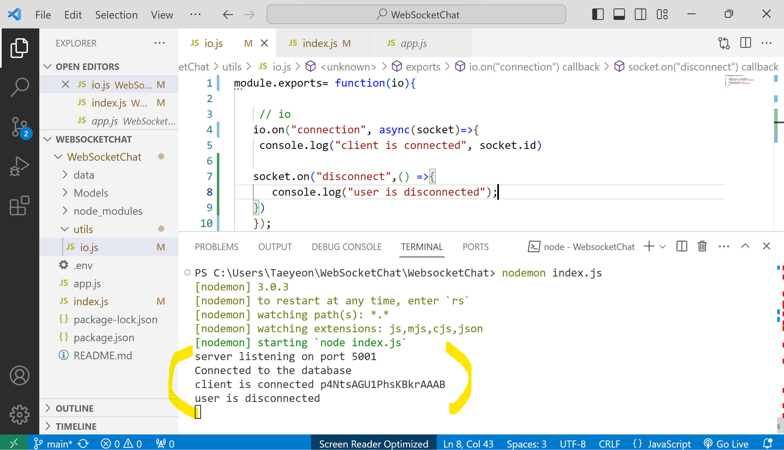
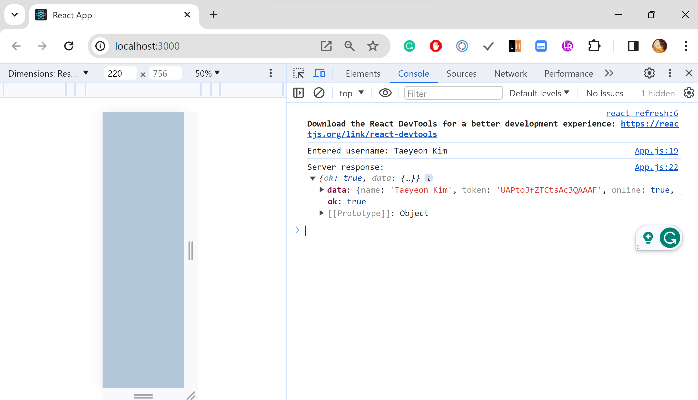
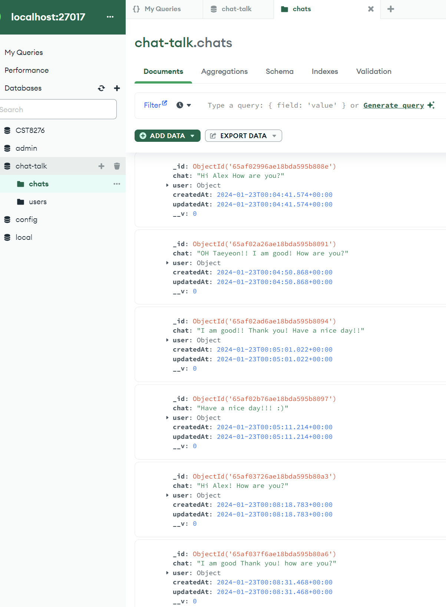

WebSocket Chat Service project

What it is
In developing the WebSocket-based chat service, I've gained expertise in architecting real-time communication systems.
Leveraging Socket.IO, I managed user connections, implemented authentication, and established a robust messaging system,
allowing bidirectional communication between clients and the server.
The incorporation of system-generated messages enhanced the user experience.
Proficiency in event-driven programming, error handling, and scalability considerations further showcases my ability to create dynamic and reliable applications.
▶Visit the github
What I did
Real-Time Communication Architecture
Proficiency in designing and implementing a real-time communication architecture using WebSocket and Socket.IO.
Understanding the mechanisms for bidirectional communication between clients and the server.
Server-Side WebSocket Handling
Experience in handling WebSocket connections on the server side using Node.js.
Competence in managing events such as connection, disconnection, and custom events like sign-in and message transmission.
User Authentication and Management
Implementation of user authentication mechanisms, including user sign-in and disconnection handling.
Knowledge of managing user-related data, such as user names and socket IDs.
Real-Time Message Handling
Ability to process and broadcast real-time messages to all connected clients.
Understanding of handling message data, including user details, content, and timestamps.
System Messages and Notifications
Implementation of system-generated messages to provide informative notifications, such as user join and leave announcements.
Error Handling and Logging
Proficiency in incorporating error-handling mechanisms to manage exceptional scenarios during various events.
Skill in logging errors for diagnostic purposes, contributing to system reliability.
Event-Driven Programming
Experience in event-driven programming paradigms, where actions and responses are triggered by events.
Competence in handling asynchronous operations and non-blocking I/O operations.
Scalability Considerations
Understanding of considerations for scaling the chat service to handle a growing number of users.
Proficiency in designing an architecture that supports low-latency communication and responsiveness.
User Experience Enhancement
Implementation of features that enhance the overall user experience, such as welcoming messages, farewell messages, and system-generated notifications.


Database MongoDB
Database Integration:
Integration of MongoDB or a similar database for storing and retrieving chat messages and user information.
Skill in utilizing a database controller (e.g., userController and chatController) for data persistence.

TOP